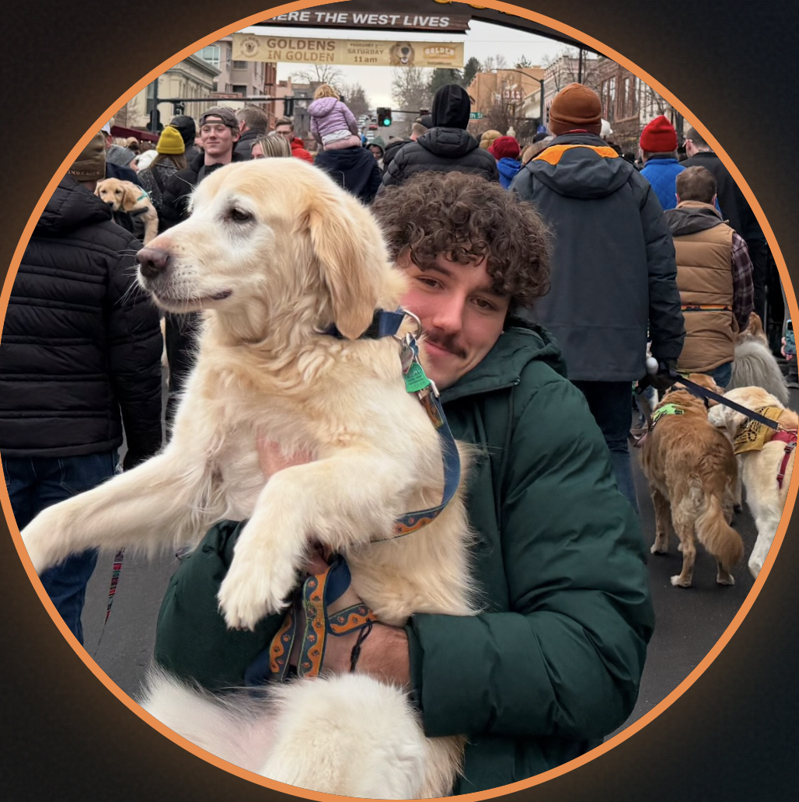

Hello, I am Idrees Nait
I’m an interdisciplinary creative technologist and digital artist. I design and build experiences that blend strong visuals with systems that work.
View My Work
About Me
Interdisciplinary Creative Technologist
I’m a third-year Creative Technology and Design student in the School of Engineering
and Applied Sciences at the University of Colorado Boulder.
Graduation Date: May 2027
I grew up in Qatar, surrounded by a culture driven to build a future that is equally functional and beautiful. That environment shaped how I see design.
I began as a fine artist, drawn not just to visuals, but to interaction — how things respond, behave, and evolve.
Design Philosophy
Design is a progressive act. It questions norms, embraces experimentation, and proposes futures that are better than where they began.
I believe the strongest work balances clarity with mystery while still being buildable, functional, and even a bit strange.
What I Do
Fine Art
Creating visual work that explores form and experimentation.
UI/UX Design
Designing intuitive interfaces and seamless experiences.
Product Design
Turning ideas into usable products through iteration and systems thinking.
CU Boulder Student | Major GPA: 3.94
Studying Creative Technology and Design at the University of Colorado Boulder within the School of Engineering and Applied Sciences.